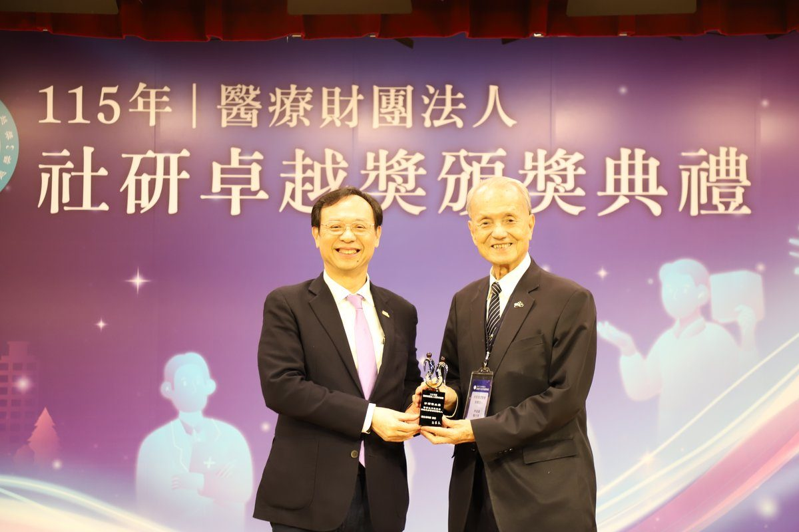

深耕醫療社會服務 慈濟獲衛福部社研卓越獎

可樂電子報小編/編輯
衛生福利部於2026年11月27日舉行「醫療財團法人社研卓越獎」頒獎典禮，慈濟醫療法人暨所屬各院因長期投入醫療救濟、社區醫療及社會服務三項綜合績效顯著，榮獲「分類傑出獎之醫療社會服務獎」，由衛生福利部部長石崇良頒獎，慈濟醫療法人執行長林俊龍代表受獎。
林俊龍執行長感恩衛生福利部的肯定，並表示慈濟醫院設立的宗旨是服務鄉親，把醫療服務從院內延伸至社區與居家，實踐證嚴上人「苦難的人走不出來，有福的人就要走出去」的理念。他也強調，醫療除了人文關懷，更重要的是專業能力，以及能否跟上時代的腳步；面對快速變遷的醫療環境，慈濟持續投入研究、教學及新科技導入，善用AI等工具提升醫療效率。
「醫療財團法人社研卓越獎」是衛生福利部為獎勵辦理《醫療法》第46條事蹟成果卓著的醫療財團法人。慈濟醫療法人此次再度獲頒「分類傑出獎之醫療社會服務獎」，從弱勢族群的醫療救濟、深入社區的健康促進與關懷，到災難發生時的即時救援與災後復原，把醫療大愛帶進社會每個需要的角落。
慈濟醫療法人於2025年優免及補助逾165萬人次的弱勢與急難個案醫療費用，並透過定期義診、健康諮詢及關懷訪視，讓醫療不再受身分、環境與地域限制。各院也主動走入機構及社區，定期關懷育幼院、心智障礙療育機構及養護機構，並將關懷觸角延伸至街友、受刑人與移工，為1萬5千人次提供適切的醫療與衛教服務。
慈濟醫療團隊與慈濟人醫會志工攜手深入偏鄉，長期深耕19個鄉鎮、28個醫療資源不足區域，提供3萬6千人次醫療服務，定期義診及到宅往診服務3萬2千人次；更以大愛無國界的理念，將醫療服務擴展到海外義診及援助國際醫療個案，服務逾9千人次。

在校園與社區方面，2025年為2萬4千名學童提供健康檢查及疫苗施打服務，辦理健康講座及社區篩檢，協助11萬2千人次民眾建立自主健康管理觀念；並將關懷延伸至失智症患者與家庭，於全臺25個鄉鎮設置37個失智社區服務據點及記憶保養班，為6,804位失智患者及家屬提供認知促進、社交互動及藝術治療等多元活動。

此外，慈濟醫療法人與慈濟志工為7萬2千位等待骨髓配對的患者舉辦250場驗血捐贈活動，2025年8月並完成第7,000例非親屬造血幹細胞捐贈，為陌生病人點亮重生的希望。面對2025年發生的天然重大災害，慈濟醫療法人迅速整合醫療資源，攜手慈濟基金會與全臺志工製作並親送4,177份熱食至災區，並以駐點醫療站、往診、安心家訪與環境清理等行動，陪伴6,200人次災民。

獲獎不僅是慈濟醫療法人的榮耀，更是對全體同仁與慈濟志工長期投入醫療社會服務的肯定。慈濟醫療法人表示，將持續秉持「人本醫療、尊重生命」的宗旨，消除弱勢就醫障礙，拔除身心靈病苦，善盡醫療慈善責任，讓愛與善的力量持續傳遞。

📸 更多現場紀實影像

🌟 掌握花蓮在地第一手資訊・歡迎訂閱追蹤
深度紀實報導、在地精采影音專題，第一時間接收最新消息！